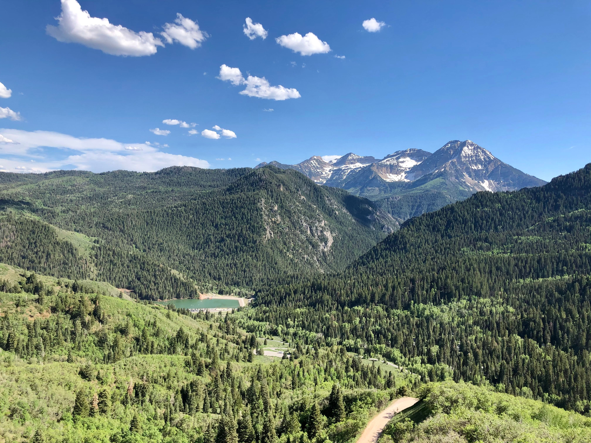

Life in Utah
Quick local notes about the area, scenery, neighborhoods, and why people like living here.
Local with Lance helps people learn about Utah County, the housing market, and what daily life here actually looks like before they make a move.

Quick local notes about the area, scenery, neighborhoods, and why people like living here.

Basic market information, average prices, new construction, and good places to start looking.
Links to Lance's social media and contact information for people who want more help.


Moving to Utah is easier when the information is simple and local. This site will introduce Utah County, explain the housing page, and point visitors toward Lance's social media for regular updates.
Start with housing info